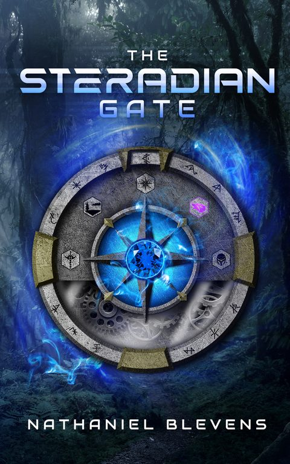
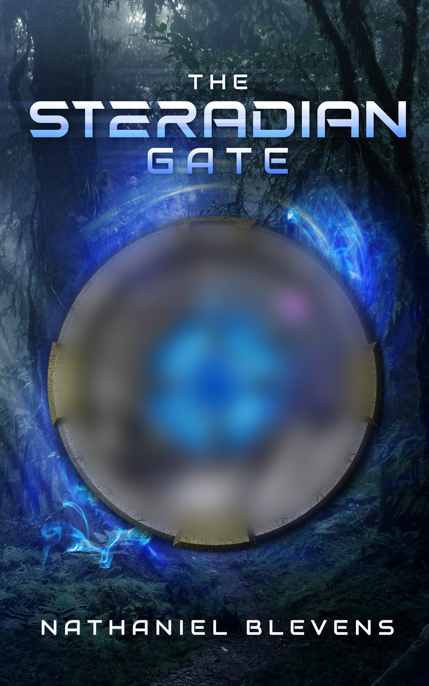
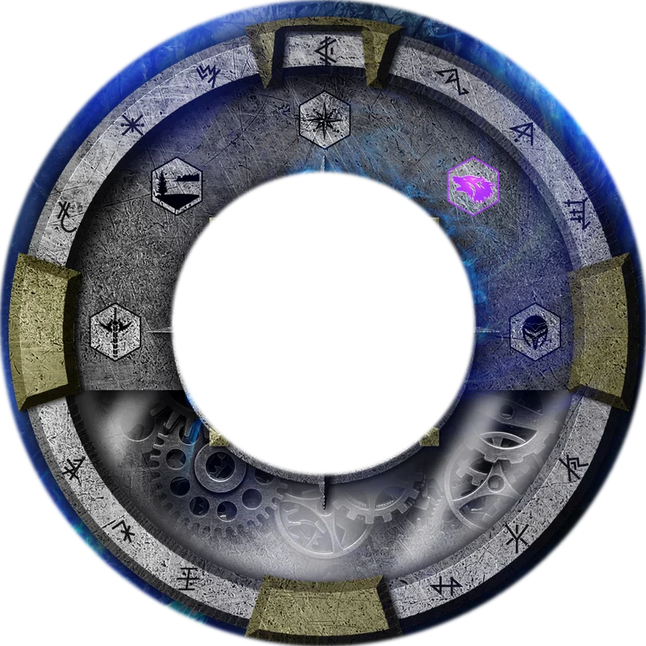
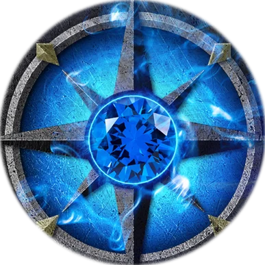
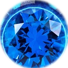
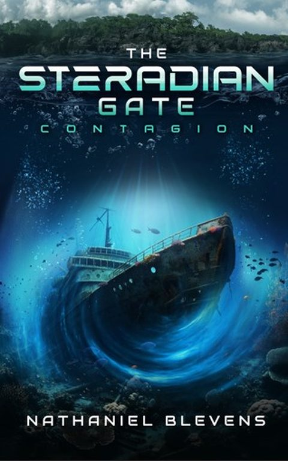
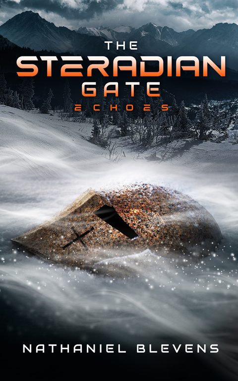
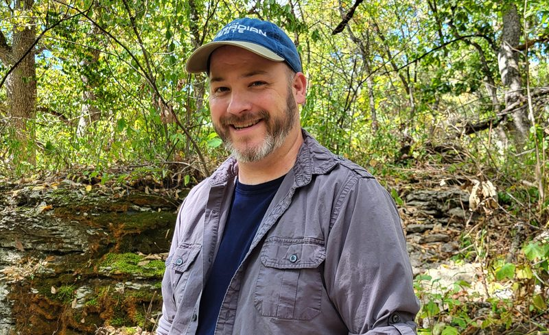

A mysterious artifact.
An evil regime.
A city lost to time.
The Steradian Gate
A science fiction adventure series about family, friendship and freedom. Book three, Echoes, is out now.
Start with book oneJourney through the gate
Ethan, Summer and the Resistance fight to save the people of Lunaria, one dimension at a time.

Book two Contagion
Not all contagions are biological. Ethan and Summer head to plague-ridden Alchemilla for the Alchemillan Steradian Key before the evil Kriva Rasturna can find it. Abandoned settlements, submerged laboratories and long-sunken shipwrecks wait for them.
Print: KD's BooksAmazon Ebook: KindleKobo Audio: Audible

Book three Echoes
Three artifacts hidden across the dimensions form the Adjunct Machina, the means to unshackle the Revenant Army. The best lead takes Ethan's coalition into Helenium, a dimension deep behind enemy lines: an ancient evil, frozen wastelands and subterranean ruins holding long-forgotten secrets.
Print: KD's BooksAmazon Ebook: KindleApple
Meet him at the gate
Sat 21 Nov
Mid-Continent Public Library Local Author Fair, Woodneath Library Center, 1 to 4 pm. Look for him with the authors for teens.
Print copies of all three books are also at KD's Books.

About Nathaniel
Nathaniel Blevens is a husband and father who writes suspenseful science fiction adventure about family, friendship and freedom. His sense of adventure comes from growing up in the Pacific Northwest. Outside of writing he's out hiking with his family, introducing his kids to the pop culture of the 80s and 90s, and cracking dad jokes for the eye rolls.
He's always had a project going: intricate displays, board games, retro video game art, and now stories.